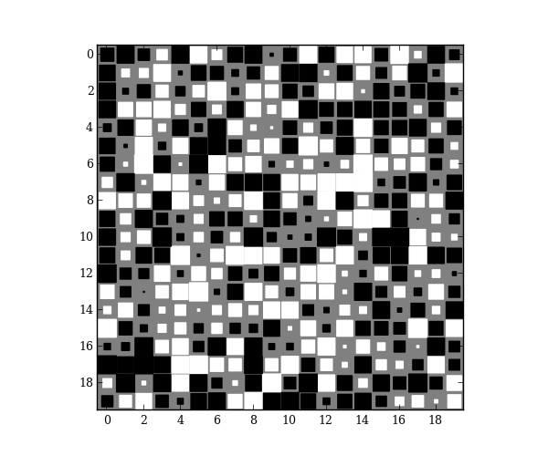

Hinton diagrams are useful for visualizing the values of a 2D array: Positive and negative values are represented by white and black squares, respectively, and the size of each square represents the magnitude of each value.
special.hinton is based off of the Hinton demo in the matplotlib gallery. This implementation, however, uses a RegularPolyCollection to draw squares, which is much more efficient than drawing individual rectangles.
Obscure example use: For my Ph.D., I wrote a numerical solver using finite-differences. For speed, the Jacobian matrices were calculated analytically, which was incredibly-prone to bugs. To debug my code, I calculated the numerical Jacobian (calculated using scipy.optimize.slsqp.approx_jacobian) and plotted the Hinton diagram for the difference of the numerical and analytical results. That allowed me to narrow down where the bugs were (boundary conditions!) instead of blindly checking every equation. You could, of course, use pcolor or imshow in a similar situation.
import matplotlib.pyplot as plt
from mpltools import special
A = np.random.uniform(-1, 1, size=(20, 20))
special.hinton(A)
plt.show()
Python source code: download (generated using mpltools 0.1dev)